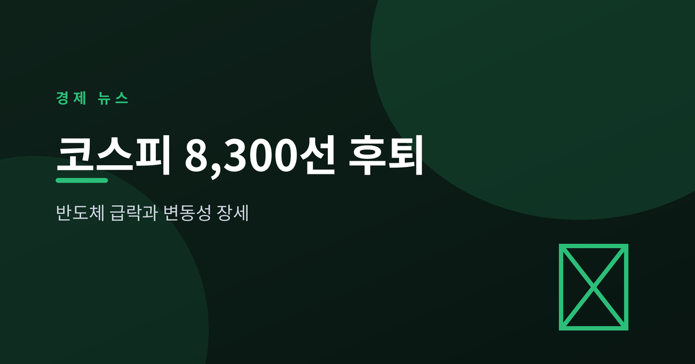
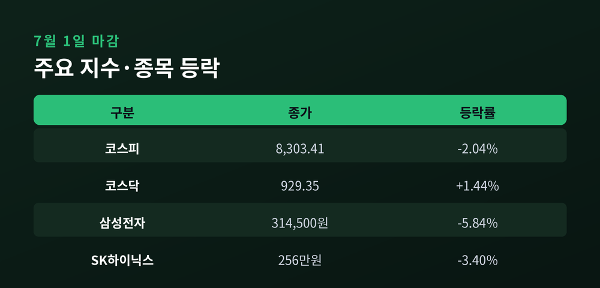
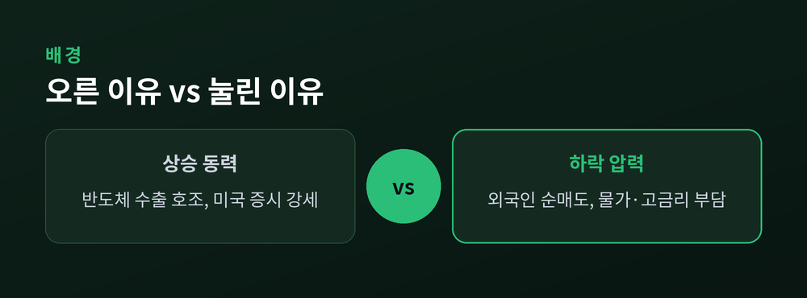
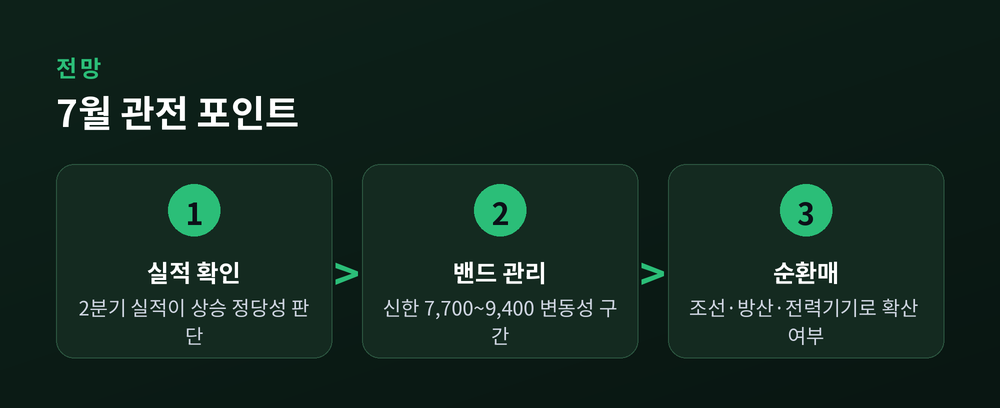

반도체 대형주 급락과 변동성 장세

하반기 첫 거래일부터 코스피가 크게 흔들렸다. 장 초반 상승 출발했던 지수는 오후 들어 급락으로 방향을 틀었다. 삼성전자와 SK하이닉스 등 반도체 대형주가 동반 조정을 받으면서 지수 전체를 끌어내렸다.
7월 1일 코스피는 전 거래일보다 173.07포인트(2.04%) 내린 8,303.41로 마감했다(출처: 아시아경제·이투데이). 장 초반에는 미국 증시 강세에 힘입어 8,600선까지 올랐으나, 외국인 매도가 커지자 장중 8,143선까지 밀리는 극단적 변동성을 보였다(출처: 아시아경제). 이날 외국인은 코스피에서 약 1조 7,000억 원을 순매도했고, 개인은 1조 7,400억 원을 순매수하며 맞섰다(출처: 아시아경제).
지수를 끌어내린 것은 반도체 대형주였다. 삼성전자는 5.84% 하락한 31만 4,500원, SK하이닉스는 3.40% 내린 256만 원에 마감했다(출처: 머니투데이·이투데이). 반면 코스닥은 1.44% 오른 929.35로 지수 간 온도차가 뚜렷했다(출처: 아시아경제).

이번 조정의 성격은 산업 악재보다 수급과 차익 실현에 가깝다. 코스피는 2026년 들어 큰 폭으로 상승했고, SK하이닉스 등 일부 반도체주는 연초 대비 배 이상 올라 있었다. 오른 폭이 컸던 종목일수록 되돌림도 가팔랐던 셈이다(출처: 선데이가디언). 반기말 리밸런싱과 외국인의 연속 순매도가 겹치면서 상단이 눌렸다는 분석도 나온다.
거시 환경도 부담을 더했다. 미국과 이란을 둘러싼 지정학 리스크는 완화 국면으로 접어들었으나, 6월 소비자물가 상승률이 높은 수준을 기록하며 통화정책이 쉽게 완화되기 어렵다는 관측이 힘을 얻었다(출처: 선데이가디언). 금리 하락 기대에만 기댄 상승은 이 지점에서 시험대에 오른다.

증권가는 7월을 방향보다 변동성으로 본다. 신한투자증권은 7월 코스피 예상 범위를 7,700~9,400으로 제시하며, 2분기 실적으로 앞선 주가 상승의 정당성을 확인해야 하는 구간이라고 진단했다(출처: 전남일보·더퍼블릭). 단기 추격 매수보다 조정 시 분할 매수가 유효하다는 조언이 뒤따랐다.
주도주 구도의 변화 가능성도 거론된다. 반도체 일변도에서 벗어나 조선·방산·전력기기 등으로 상승세가 번지는 순환매 장세가 나타날 수 있다는 관측이다(출처: 서울경제). 실제로 AI 데이터센터 확산에 따른 전력 수요 기대가 전기장비 관련주로 자금을 끌어들이고 있다.

정리하면, 7월 첫 거래일의 급락은 반도체 슈퍼사이클의 종료보다는 급등에 따른 되돌림과 수급 변동으로 읽는 시각이 우세하다. 다만 물가와 금리라는 거시 변수, 그리고 실적 확인이라는 숙제가 남아 있어 당분간 넓은 등락은 이어질 공산이 크다. 지수의 숫자보다 실적으로 증명되는 종목이 무엇인지에 시선을 두는 편이 유효하다.
이 글은 투자 권유가 아니며, 공개된 자료를 정리한 참고용 정보입니다. 투자 판단과 그 결과에 대한 책임은 투자자 본인에게 있습니다. 수치는 작성 시점 기준이며 이후 변동될 수 있습니다.